|
|
Localization and internationalization |
All Substance-specific labels (system
menu entries, Xoetrope color chooser panel, heap status panel, menu search panel, ...)
are internationalized. See this document
for the list of available translations.
|
|
|
Vertical (rotated) tabs in tabbed panes |
Tabs in tabbed panes under LEFT and
RIGHT placement can be layed out vertically (rotated). In addition,
the icon can be drawn either rotated (with the tab) or unrotated. See this blog entry
for the description on how to use this feature.

|
|
|
Strength checking on passwords |
Password fields can provide visual feedback
on the strength of the currently set contents (password). See this blog entry
for the description on how to use this feature. See 22-second AVI
movie (412 KB) illustrating the technique.


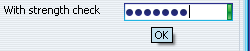
|
|
|
Specular gradient painter for buttons |
Added optional specular gradient painter for buttons. Can be set using:
- -Dsubstancelaf.gradientPainter=org.jvnet.substance.painter.SpecularGradientPainter
- for all application buttons.
- SubstanceLookAndFeel.setCurrentGradientPainter("org.jvnet.substance.painter.SpecularGradientPainter")
- for all application buttons.
- SubstanceLookAndFeel.setCurrentGradientPainter(new SpecularGradientPainter())
- for all application buttons.
- Using client property SubstanceLookAndFeel.GRADIENT_PAINTER_PROPERTY
on a specific button. Value should be "org.jvnet.substance.painter.SpecularGradientPainter"
string.
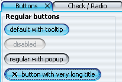
|
|
|
Focus ring kinds |
Added option to specify the focus ring kind. The focus ring kind is
specified in the org.jvnet.substance.utils.SubstanceConstants.FocusKind
enum and can be specified on any component. At runtime, the value is taken from:
- The component itself.
- The closest parent of the component.
- The UIManager table.
The default value is FocusKind.ALL_INNER:
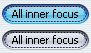
|
|
|
Watermark bleeding |
Added option to specify that the watermark should "bleed"
through opaque trees, lists and tables. When this option is turned on, the watermark
is drawn with 40% translucency on text fields. This option can be turned on by specifying:
- -Dsubstancelaf.watermark.tobleed - no value needed.
- UIManager.put(SubstanceLookAndFeel.WATERMARK_TO_BLEED,
Boolean.TRUE);
Note that this option will have no effect on cell renderers that fill their
background programmatically (as shown in the below image on the selected
tree entry):
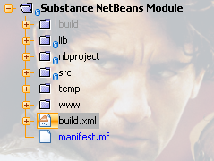
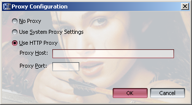
|
|
|
Watermark ignore |
Added option to specify that the watermark should not be drawn
on a specific component or at all. This option can be turned on by specifying:
- component.putClientProperty(SubstanceLookAndFeel.WATERMARK_IGNORE,
Boolean.TRUE);
- UIManager.put(SubstanceLookAndFeel.WATERMARK_IGNORE,
Boolean.TRUE);
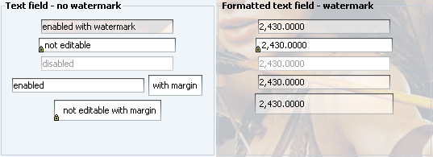
|
|
|
Specifying base and extra font size |
Added API for setting base and extra font size for
all the controls. The following two functions are provided in the
SubstanceLookAndFeel:
- public static void setBasicFontSize(int value);
- public static void setFontSizeExtra(int value);
The default base font size is OS-specific (13 points for Mac, 11 points for other OSes).
The default font family is OS-specific (Lucida Grande for Mac, Tahoma
for other OSes where available, except under Korean, Chinese and Thai locale, and
dialog otherwise).
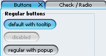
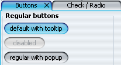
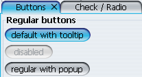
|
|
|
Toolbar buttons |
Buttons in toolbar are flat. Only on rollover (fade in / fade out)
the background is seen.
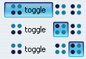
Before:
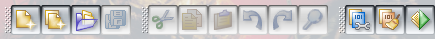
After:
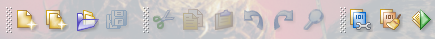
|
|
|
Support for Matisse baseline alignment |
The Substance
Netbeans module provides support for baseline alignment in Matisse UI designer.
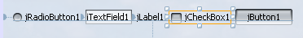
|
|
|
Gradient background on menu icons |
The "icon gutter" on menus (regular and popup)
has theme-based gradient background. In addition, the menu separator is not
drawn in the icon gutter area.
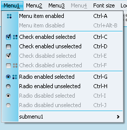
|
|
|
Marking non-editable text components |
Non-editable text components display an overlayed lock icon:
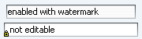
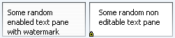
|
|
|
Auto-completion on editable comboboxes |
Merged refactored version of
auto-completion support
in editable comboboxes by Thomas Bierhance.
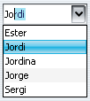
Editable comboboxes marked with SubstanceLookAndFeel.COMBO_BOX_USE_MODEL_ONLY
property allow completion-only (no other values allowed). In this case, a lock icon
is overlayed on the combobox:
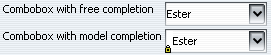
|
|
|
Translucency-based animation for title pane buttons |
The title pane buttons (minimize, restore / maximize, close)
of frames, dialogs, internal frames and desktop icons have translucency-based animation
on rollover. See 34-second AVI
movie (798 KB) illustrating the technique.
|
|
|
Rollover color wheel effects |
Xoetrope's color wheel in the color chooser
has been augmented with rollover effects. In the screenshot you can see
the selected area and the rollover area (under the mouse pointer):
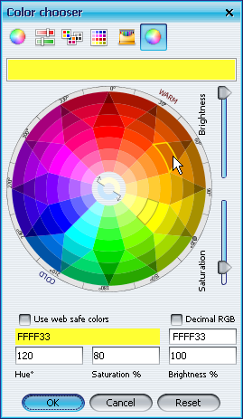
|
|
|
Configurable size of tab close button |
The size of close button on tabs in JTabbedPane
can be configured. Application should set
SubstanceLookAndFeel.TABBED_PANE_CLOSE_BUTTONS_SIZE
client property on either the tabbed pane's Component (if it's JComponent),
JTabbedPane (for all tabs of that pane) or the UIManager
(for all tabbed panes). The value should be an instance of Integer. In the
screenshot the first tab has close button size set to 9, the second tab is default 11.
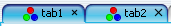
|
|
|
Animating close buttons of modified tabs |
Instead of animating the entire modified tab in JTabbedPane,
only its close button can be animated. Application should set
SubstanceLookAndFeel.TABBED_PANE_CLOSE_BUTTONS_MODIFIED_ANIMATION
client property on either the tabbed pane's Component (if it's JComponent),
JTabbedPane (for all tabs of that pane) or the UIManager
(for all tabbed panes). The value should be an instance of Boolean. In the
screenshot the first tab has animated close button, the second tab is completely animated by
default.
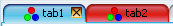
|